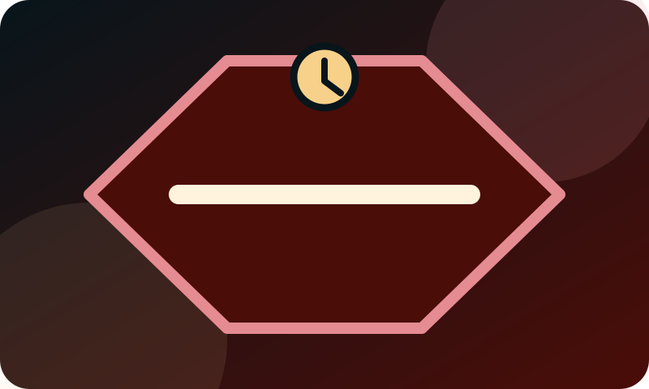

01
Sačuvajte sve
Rešenje, obaveštenje, kovertu, poruke i raniju prepisku stavite na jedno bezbedno mesto.
Ne ignorišite rok
Ako je stiglo rešenje, račun je blokiran ili se pominje obustava, popis ili prodaja imovine, prvo zaustavite paniku i prikupite činjenice.
Prvih nekoliko minuta
U hitnoj situaciji ne morate odmah imati konačan odgovor. Važno je da sačuvate ono što ste dobili, zapišete datume i proverite da li dokument navodi rok za postupanje.
Ako postoji konkretan rok ili pretnja prinudnom naplatom, nemojte se oslanjati samo na neproverene savete sa društvenih mreža. Pripremite podatke za odgovarajuću stručnu proveru.


Hitni prvi koraci
Blokada računa, obustava ili novo rešenje zahtevaju brzu proveru datuma, dokumenata i narednih mogućnosti.
01
Rešenje, obaveštenje, kovertu, poruke i raniju prepisku stavite na jedno bezbedno mesto.
02
Zapišite kada ste dokument dobili i koji rok ili datum je naveden u njemu.
03
U nekoliko rečenica napišite šta se dogodilo i šta vas trenutno najviše brine.
Situacije koje ne treba odlagati
Posebnu pažnju obratite ako ne možete da raspolažete računom, vidite obustavu na plati ili penziji, dobijete najavu popisa ili prodaje, ili ne prepoznajete dug. Prikupite osnovne informacije i zatražite odgovarajuću stručnu pomoć.
Ne šaljite javno JMBG, broj računa, broj lične karte, potpis ili celo rešenje.
Šta ne raditi napamet
Nemojte bacati dokumenta, menjati ili brisati prepisku, niti javno objavljivati tuđe ili svoje lične podatke. Ako razmišljate o uplati, dogovoru ili drugom važnom koraku, prvo proverite šta dokument tačno traži i koji rok važi.
Važno: sadržaj je informativan i ne predstavlja pravni savet niti garanciju ishoda. Konkretan slučaj zahteva proveru dokumenata, rokova i svih okolnosti.